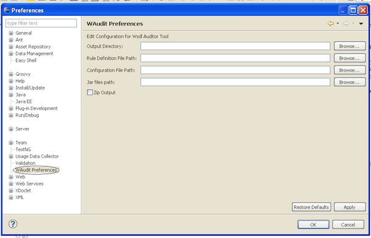
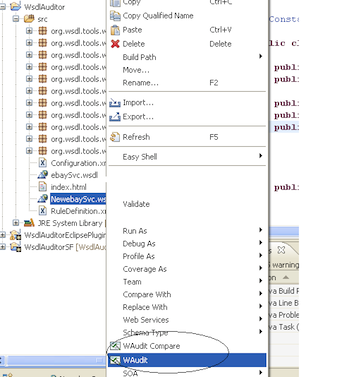

Intro:
The tool will run the user defined audit rules on supplied WSDL(though currently it supports only WSDL based on w3c schema type, it can be extended to support any XML).
The rules should be defined in XML, in a defined format which will be explained below.
The tool also has a capability of comparing two wsdl's(Mainly a old and new version of same WSDL) and run rules on the newly added/removed elements.
Also this tool is completely extensible, i.e. all the core classes are instantiated using factory backed by Configuration.xml which can supplied as input argument.
By Default Tool generates a HTML output, but you can supply any output user, which uses the tool output to generated any kind of file.
Command Line Usage:
Download the
Executable Jar from the Links Section on Left, from the directory where WsdlAuditor.jar is located run the following commands.
java -jar WsdlAuditor.jar document=<WSDL Document path/URL> ruledef=<Ruledefinition xml Path/URL> outputdir=<output directory>
If tool needs to be used in compare mode, add a parameter
comparedoc=<old wsdl path>
For Supplying Configuration to tool, which is used to configure new OutputUsers, Rule Operator Executors, Switching off Default Output.
Add following argument,
config=<configuration xml path>
Look How to Create a Rule Definition for detailed information on Rule Definition Syntax.
Look How to Extend Tool using Configuration for detailed information on Configuration File Syntax.
Eclipse Plugin Usage:
Installation
1. Install directly from eclipse using the update site URL :
http://wsdlauditor.sourceforge.net/WsdlAuditorUpdateSite/
2. Download the Update Site Zip file
WsdlAuditorUpdateSite.zip
3. Download the
Eclipse Plugin Jar.
-
Extract the Zip File.
-
Copy plugins/org.wsdl.tools.wsdlauditor.plugin_1.0.1.jar file to plugins folder in Eclipse Home.
-
Restart Eclipse.
Prefer the 1st installation method.
Now open Eclipse Preferences, you will find the "WAudit Preferences" menu, and you will find the following screen.

-
Output Directory: Directory To which audit reports are to be stored.
Required: Mandatory, if Config file is not supplied.
-
Rule Definition File Path: Complete File path of Rule Definition file
Required: Mandatory
Look How to Create a Rule Definition for detailed information on Rule Definition Syntax.
-
Configuration File Path: Complete File path of Configuration file
Required: Optional, Required only if tool needs to be extended for new rule operators or output users
Look How to Extend Tool using Configuration for detailed information on Configuration File Syntax.
-
Jar Files Path: "," separated any extra jars required
Required: Optional, Required only if tool needs to be extended for new rule operators or output users
-
Zip Output: Whether Output needs to be Zipped
Required: Optional
You will find the following menu Options in eclipse after successful installation of plugin,
-
"WAudit" Menu in Project, this will create a Audit Report for all the wsdl's in the selected project.
-
"WAudit" Menu on right click of any folder/package, this will create a Audit Report for all the wsdl's in the selected folder.
-
"WAudit" Menuon right click of any file, this will create a Audit Report for the selected file.
-
"WAudit Compare" Menu on right click of any file, this will Open a File Select Dialog Box, upon selecting the old version of the file, this will run compare rules.

How to Create a Rule Definition:
The Rule Definition is an XML file which describes the auditing rules which are to be enforced on a wsdl.(
Currently XSD for this file is not Yet Created, but will be created in later point.)
The basic structure of the Rule Definition file is as follows,
<?xml version="1.0" encoding="UTF-8"?>
<wsdlRuleEngine>
<rulesets>
<ruleset conjunction="and" name="AnnotationRule">
<group conjunction="and">
<rule on="child" oper="!Present" name="annotation" />
<rule on="child" name="annotation" ruleset="NameCapitalRule"/>
</group>
<error type="error" code="10">
<message>Every Element should have Annotation</message>
<suggestion>Add Annotation to Element</suggestion>
</error>
</ruleset>
<ruleset conjunction="and" name="NameCapitalRule">
<group conjunction="and" negate="true">
<rule on="attribute" oper="!Matches" name="name" value="[A-Z].*" />
</group>
<error type="error">
<message>name of element/value/type must start with a capital letter.</message>
<suggestion>Correct the name of the element</suggestion>
</error>
</ruleset>
<ruleset conjunction="and" name="NameAlphaNumeric">
<group conjunction="and">
<rule on="attribute" oper="!Matches" name="name" value="[a-zA-Z0-9_]*"/>
</group>
<error type="error">
<message>name must be alphanumeric.</message>
<suggestion>name must be alphanumeric.</suggestion>
</error>
</ruleset>
</rulesets>
<rules name="NameRule">
<include ruleset="NameCapitalRule" />
<include ruleset="NameAlphaNumeric" />
</rules>
<rules name="DocRules">
<include ruleset="AnnotationRule" />
</rules>
<rules name="AttributeRules" on="Attribute" change="Added">
<include rules="DocRules" />
<include rules="NameRule" />
</rules>
<rules name="SimpleRules" on="SimpleType">
<include rules="DocRules" />
<include ruleset="NameAlphaNumeric" />
</rules>
</wsdlRuleEngine>
Rule Definition Mainly Contains
- RuleSets: Set of rules Grouped Together, which are successful execution returns a Error Message
- Rules: Rules are a Set of rule sets which are to be executed on any entity.
The Following are the different supported values of all the attributes in the Rule Definition,
- conjunction: Values "and" and "or" can be used here.
- on:
- Rule: Values child,comment,attribute,value can be used here, this means the rule will be executed on those elements of an Entity
- Rules: Values Element, ComplexType, SimpleType, Enumeration,RequestType, ResponseType, Attribute, Service, Operation can be used here, this means the rule will be executed on those Entities
- oper: Values Supported by default are(new values can be supplied through Configuration.xml) StartsWith, EndsWith, Contains, Equals, Empty, Method, Matches,!Matches, In, Present,Position,DirectReturn, !StartsWith, !EndsWith, !Contains, !Equals, !Empty, !In, !Present,!Position, Primitive,!Primitive,Count
Most of the values are self explanatory.
Method: This will call the method from the class supplied in the value attribute, the class supplied should implement org.wsdl.tools.wsdlauditor.interfaces.RuleExecutor
Matches: This will execute the java RegEx, with expression supplied in the value.
In: This will check if the element is present in the "," separated values supplied in value attribute.
Position: This will check the Position of the element w.r.t its peers, the value can hold "last" or "first" mainly use on compare rules. In case this rule is used as rule on changed elements, this checks the position as per old doc if removed, or position as per new doc element.
DirectReturn: the value attribute should hold "true" or "false" and this will just return the appropriate boolean value.
Count: This will check if the count of the children or attributes is same as the value attribute.
Present: Checks if the child/attribute/value/comment is present or not.
- name: the value of this attribute depends on the "on" attribute, this can be name of the attribute or child.
if this attribute is supplied when "on" is child then the rule will be executed on child with this tag-name.
if supplied along with "Present" oper then will check the presence of child or attribute.
This can hold a value of *, which means on all the attributes(* is supported only in case the on is attribute).
- value: the value of the value which should be supplied to the rule, ex: in case of Matches value will hold the Java Pattern which has to be applied on it.
- ruleset: This is valid only in case "on" is child, this specifies the rule set which should be executed on the child element specified by name attribute.
- negate: supplied on group tag, Values true,false this just indicates rule engine to negate the cumulative result from the rules in that group
- name: name attribute on Rules, RuleSet should be unique in the corresponding peers.
- change: Change can be "Added" or "Removed" which indicates that to run the following rules on Added/Removed elements only,
Also Change is considered only if indicated along with on attribute.
- ruleset: Ruleset which needs to be included.
- rules: Rules which needs to be included.
Download the
SampleRuleDefinition.xml for further clarity.
How to Extend Tool using Configuration:
Configuration file is used to Extend the Tool and supply the new Operators and Any of the core classes,
Also it can be used to supply Output users, which generate different kind of output.
The basic Structure of Configuration file is as follows,
<?xml version="1.0" encoding="UTF-8"?>
<wsdlauditorconfig
xmlns="WsdlAuditorConfiguration"
xmlns:xsi="http://www.w3.org/2001/XMLSchema"
xsi:schemaLocation="WsdlAuditorConfiguration Configuration.xsd">
<defaultoutputdir>c:\wsdlAuditReports</defaultoutputdir>
<outputusers>
<outputuser name="DefaultHtml" disabled="false">
<class>org.wsdl.tools.wsdlauditor.html.DefaultOutputUser</class>
<outputdir>c:\wsdlAuditReports</outputdir>
<param>
<name>param1</name>
<value>value1</value>
</param>
</outputuser>
</outputusers>
<factory>
<executors>
<executor>
<operator>Contains</operator>
<class>org.wsdl.tools.wsdlauditor.ruledefn.executors.ContainsExec</class>
</executor>
</executors>
<dataobjects>
<dataobject>
<type>RuleEngine</type>
<class>org.wsdl.tools.wsdlauditor.ruledefn.RuleEngine</class>
</dataobject>
</dataobjects>
</factory>
</wsdlauditorconfig>
The main elements of the Configuration file are
- outputuser: This configuration is supplied to generate or use the output from the WsdlAuditor, this class must implement org.wsdl.tools.wsdlauditor.interfaces.OutputUser
- executor: This configuration is supplied to use new kind of operators in by WsdlAuditor, the operator should exatly match the value provided in the oper attribute on a rule, This class must implement org.wsdl.tools.wsdlauditor.interfaces.RuleExecutor
- dataobject: This configuration is supplied to provide different implementations of different core classes in the WsdlAuditor.
Different Values of type and the classes it has to implement/extend are,
- RuleEngine: The core RuleEngine class this is responsible for executing the rules on elements.
This class should extend org.wsdl.tools.wsdlauditor.ruledefn.RuleEngine
- ElementInfo: The ElementInfo class holds data about each element.
This class should extend org.wsdl.tools.wsdlauditor.ruledefn.data.ElementInfo
- Error: The Error class holds data about each error element in ruleset.
This class should extend org.wsdl.tools.wsdlauditor.ruledefn.data.Error
- Rule: The Rule class holds data about each Rule element.
This class should extend org.wsdl.tools.wsdlauditor.ruledefn.data.Rule
- RuleDefinition: The RuleDefinition class holds data about Complete RuleDefinition.xml file.
This class should extend org.wsdl.tools.wsdlauditor.ruledefn.data.RuleDefinition
Or alternatively can implement org.wsdl.tools.wsdlauditor.interfaces.RuleDefinitionInterface
- RuleParam: The RuleParam class holds data which is passed to RuleExecutor.
This class should extend org.wsdl.tools.wsdlauditor.ruledefn.data.RuleExecutorParam
- RuleGroup: The RuleGroup class holds data of group tag.
This class should extend org.wsdl.tools.wsdlauditor.ruledefn.data.RuleGroup
- Rules: The Rules class holds data of rules tag.
This class should extend org.wsdl.tools.wsdlauditor.ruledefn.data.Rules
- RuleSet: The RuleSet class holds data of ruleset tag.
This class should extend org.wsdl.tools.wsdlauditor.ruledefn.data.RuleSet
- SchemaElement: The SchemaElement class holds data about a wsdl element, this contains complete information about Element, its Reference counterpart etc.
This class should extend org.wsdl.tools.wsdlauditor.ruledefn.data.SchemaElement
- SchemaError: The SchemaError class holds error data created from executing Rule.
This class should extend org.wsdl.tools.wsdlauditor.ruledefn.data.SchemaError
- WsdlSchema: The WsdlSchema class holds error data of complete WSDL file.
This class should extend org.wsdl.tools.wsdlauditor.ruledefn.data.WsdlSchema
- RuleDefinitionReader: The RuleDefinitionReader class parses the RuleDefinition file and creates the Object structure.
This class should extend org.wsdl.tools.wsdlauditor.ruledefn.DefaultRuleDefinitionReader
Or alternatively can implement org.wsdl.tools.wsdlauditor.interfaces.RuleDefinitionReader
- DocumentParser: The DocumentParser class parses the wsdl file and creates the Object structure.
This class should extend org.wsdl.tools.wsdlauditor.document.WsdlParser
Or alternatively can implement org.wsdl.tools.wsdlauditor.interfaces.DocumentParser
Download the
SampleConfiguration.xml for further clarity.
Download the
Configuration.xsd for further clarity.